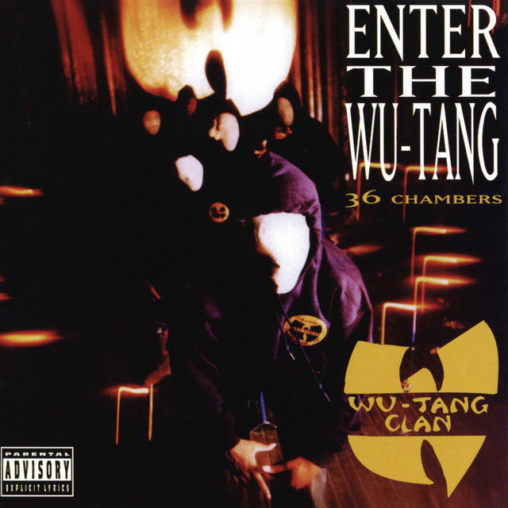

One day, after noticing the music video for "Chop Suey" and it's view count of one billion, I decided to check out the song for the first time. I thought it was a bit odd, but different, so I decided to listen to it a few more times and eventually I was hooked. After becoming a fan of the song, I decided to check out the rest of the album, and now I can firmly say that I am a System Of A Down fan. Their unique take on the metal genre gives people a refreshing and fun listening experience that even those who aren't interested in the genre can get in to.
Imagine a rap group where just about every member is a contender for the moniker of the greatest rapper of all time. That is what you get with the Wu-Tang Clan. This debut LP from these 9 legendary NYC rappers put on some of the most impressive rap performances that someone could ever hear. If you have a love of lyricism in rap music, then this is the album for you. Some of the highlights of the album include songs such as "C.R.E.A.M. (Cash Rules Everything Around Me)", "Protect Ya Neck", and "Da Mystery of Chessboxin'."
Bob Marley, together with the 5 other members of the Wailers, came together to put on an all time classic. They were a phenomenal run, as this was the third album that the band had put out that year. It also contained some of the biggest songs that the band had ever done, like "I Shot The Sheriff" and "Get Up, Stand Up." This album features those sweet reggae sounds as well as hints of political activitism that help put Bob Marley and his band on top of the genre.

If you are a fan of rock, jazz, or just music general, then In The Court Of The Crimson King is something that you can enjoy. If you're a fan of songs that take their time, then you'll also love this one. These progressive rock giants showed out for their very first album, creating some of the most intricate and complex sounds that rock had ever seen. Mick Jagger of The Rolling Stones once described them as an orchestra. Knowing that there were only 4 members of the band time, makes hearing that statement all the more impressive.